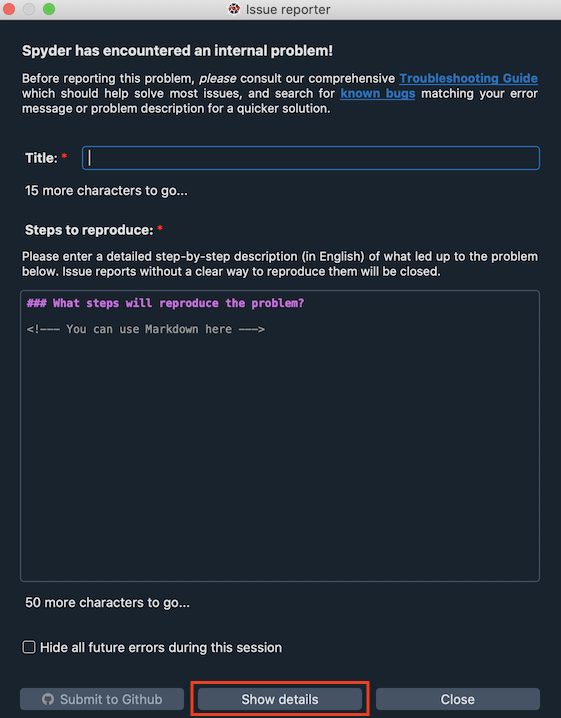

Primeros Pasos#
Si Spyder se bloquea o recibes un mensaje de error, por favor lee los siguientes pasos de solución de problemas antes de abrir uno nuevo. Hay una buena posibilidad de que alguien más ya haya experimentado el mismo problema, así que comprobar si ya hay una solución existente probablemente hará que Spyder vuelva a trabajar para ti lo más rápido posible.
Importante
Para asegurarte de que estás recibiendo la ayuda más relevante para tu problema, por favor asegúrate de que el problema está realmente relacionado con Spyder:
Si el problema parece ser el resultado de tu propio código, Stack Overflow es un mejor lugar para empezar.
Si el error también ocurre en los entornos estándar de Python, IPython, o QtConsole, o solo con un paquete específico, es poco probable que sea algo en Spyder, y deberías reportarlo a esas fuentes en su lugar.
Si el problema radica en tu instalación específica, se recomienda encarecidamente desinstalar y reinstalar la distribución Anaconda. Como los otros métodos de instalación de Spyder pueden resultar en complicados problemas específicos del usuario, generalmente no somos capaces de dar soporte individual para problemas de instalación.
Al igual que los programas que codificas en él, Spyder está escrito en Python, por lo que a menudo puedes resolver muchos problemas con solo leer la última línea del traceback o mensaje de error. Para verlo, simplemente haz clic en Mostrar detalles en la ventana de error de Spyder.
A menudo, eso por sí solo te dirá cómo solucionar el problema por tu cuenta, pero si no, estamos aquí para ayudarte.
Donde buscar ayuda a partir de aquí#
Si revisas nuestra lista de categorías de incidencias y descripciones de problemas y ves una pregunta, mensaje de error o seguimiento te resulte familiar, es probable que la subsección correspondiente te brinde la ayuda más específica para resolver tu problema rápidamente.
Como primer paso para resolver tu problema, puedes probar algo de Primera ayuda básica.
Si Spyder no se inicia, comprueba la sección de Kit de emergencia y verifica si eso soluciona el problema.
Si tu problema está relacionado con el núcleo que no se inicia, el autocompletado o un plugin, ve a la sección Problemas comunes.
Si todavía no puedes hacer que funcione, y el problema está realmente relacionado con Spyder, deberías consultar la sección Pedir ayuda para ver otros recursos para explorar.
Por último, si no pudiste resolver tu problema y deseas enviar un issue a nuestro gestor de issues de Github, para que el error puede corregirse para todos, usa Enviar un reporte.